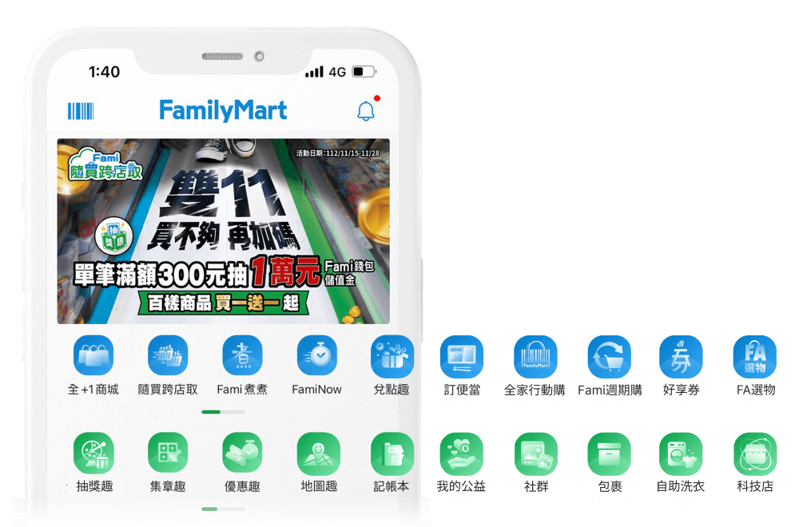
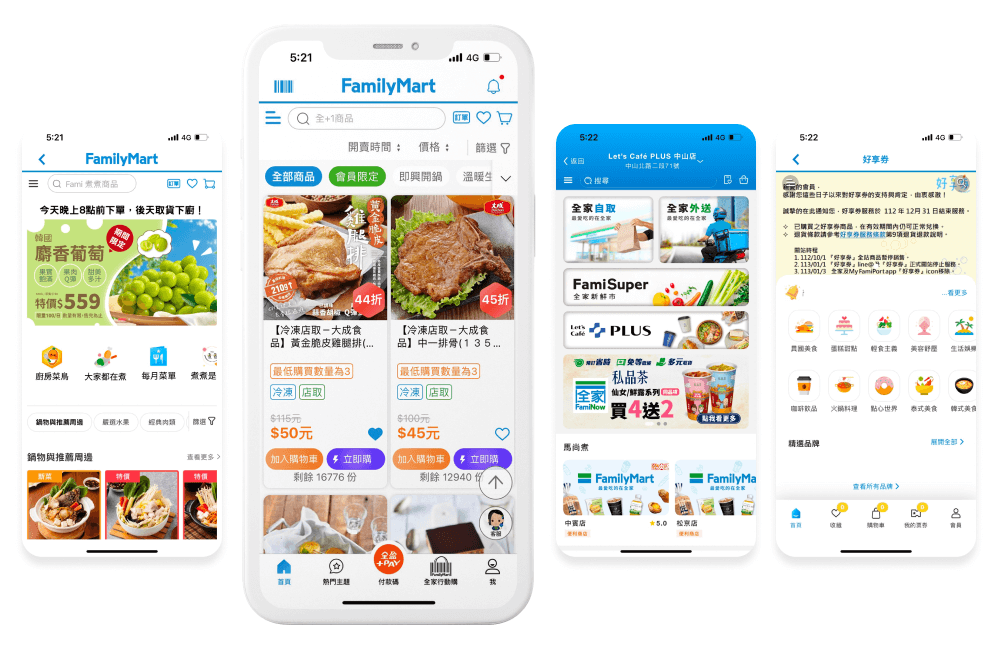
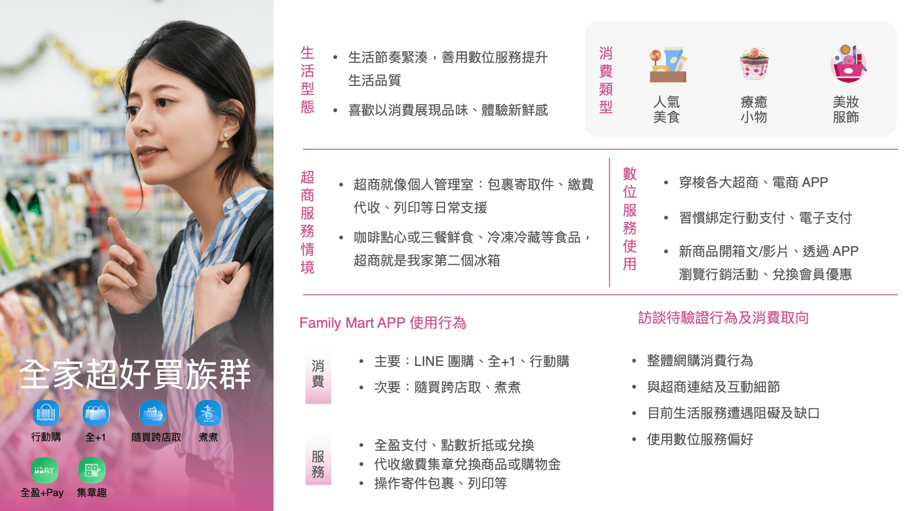
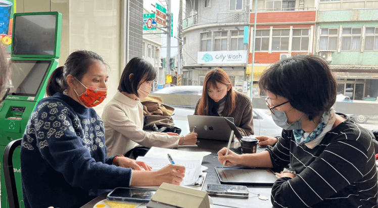
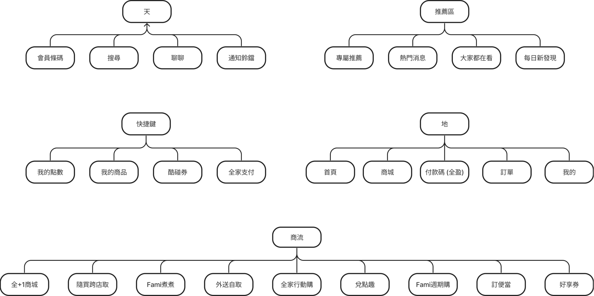
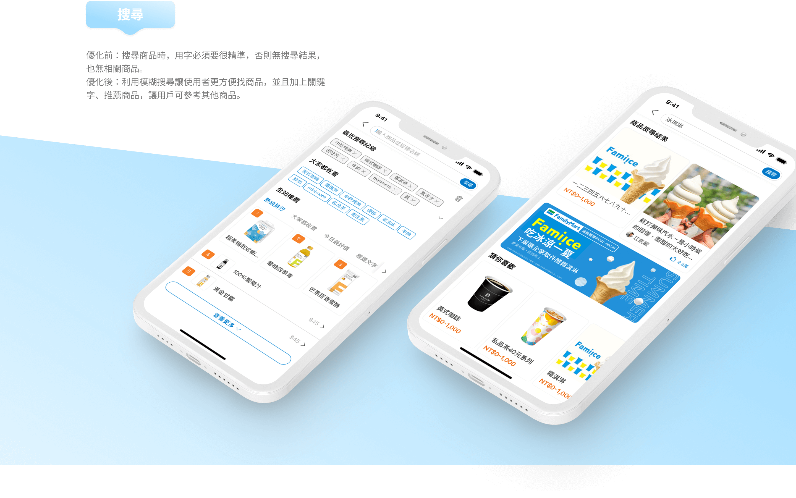

策略目標
營運面
- 新服務的曝光度不高，成效不好。
- 期望可以提升線上購物的營收。
- 提高消費者購買慾望與用戶黏著度。
- 活躍人數(DAU/MAU)無法突破。
- 減低採購上架勞務。
體驗面
- 九個商流各自獨立維運，共有九台獨立的購物車，不僅消費者結帳流程繁瑣，後台也難以維護。
- 客服反映用戶經常抱怨功能不易找尋。
數據面
- 系統架構老舊，不利維運。
- 數據埋點不齊，難以追蹤用戶行為軌跡。
- 相同功能模組重複開發，無法共用，浪費開發成本。
現況痛點

資訊架構混雜
商流隨著發展越來越多，消費者看不懂各商流差異，以及相似的行銷活動，消費者無法快速找到功能，想購買的商品也不知道歸屬在哪商流入口。
營收停滯不前
- 結帳便利性不足，消費者購買流程多斷點，跨商流購買商品時要分多次結帳。
- 各商流獨立開發，各自維運。
- 各商流各自擁有訂單，用戶須分開查找紀錄。

營收停滯不前
- 用戶認為商品推薦不精準，無法引起購買慾望。

用戶學習成本高
- 相同功能在各商流的UIUX介面不一致。
- 介面的引導性不足，需透過店舖人員協助操作教學。
用戶學習成本高
- 搜尋商品時，用字必須要很精準，無法模糊搜尋商品。
用戶學習成本高
- 不易理解各支付方式的差異，且各個支付入口散落各處。
使用者分析
為了培養會員與品牌的深度、提升跨售的機會，並透過會員增加行銷的擴散，以上述三項特性訂定出「全家超好買族群」、「生活超便利族群」、「優惠不錯過族群」這三種人物誌的族群特性。


設計歷程
外部專家經驗法則評估
將現行舊版、新設計A版，兩版給專家評估，來說服其他部門單位去執行重構方向。
- 現行舊版評估過後，與先前內部統整的痛點不謀而合。
- 新設計A版評估過後，還有一些需要再調整優化的地方。
將A版調整後，產出B版來和使用者訪談、測試。
訪談經歷
焦點團體、一對一訪談
透過實際的消費者問卷，找出適合的焦點團體、一對一訪談的對象。

店長訪談
搜集店長在店鋪經營時的消費者回饋。
利害關係人訪談
綜合以上用戶觀點與回饋，和內部利害關係人訪談溝通，最後統整出可行的優化方案。
利害關係人訪談
優化方向
1.如何讓用戶清楚知道要去哪裡找商?
去商流化，整合一個商城入口。
2.如何讓用戶快速結帳、方便查找訂單紀錄？
整併訂單系統，一個購物車快速結帳。
3.如何再提⾼顧客的APP使⽤頻率？
- 制定語言一致的設計系統
- 凸顯會員常用功能：會員點數、隨買兌換、⽀付、酷碰券。
- 完善商品搜尋功能，運用模糊搜尋、新增熱門關鍵字、商品推薦。
- 整合一個支付入口。
4.如何提高用戶黏著度？
- 個人化訊息通知，提醒會員個人相關重要訊息。
- 提升商品推薦精準度，運用個人化推薦，提高用戶下單意願。
- 點數運用過於侷限，拓展點數多元應用。

UI Flow
